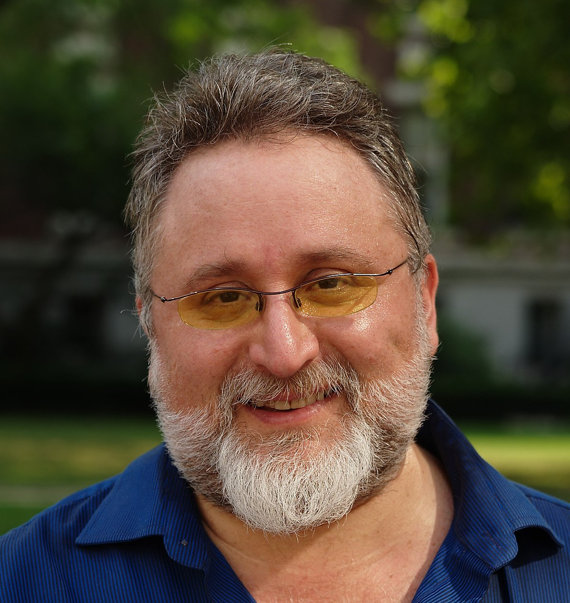

<div class ="page-section">
    <div class="grid-2">
        <div class="column-3">
            
        </div>
        <div class="column-4">
            <h3>Eben Moglen, President of the Board</h3>
            <p>Professor of Law and Legal History at Columbia University Law School. Professor 
                Moglen has represented many of the world’s leading free software developers. 
                Professor Moglen earned his PhD in History and law degree at Yale University 
                during what he sometimes calls his “long, dark period” in New Haven. After law
                school he clerked for Judge Edward Weinfeld of the United States District Court 
                in New York City and for Justice Thurgood Marshall of the United States Supreme 
                Court. He has taught at Columbia Law School since 1987 and has held visiting
                 appointments at Harvard University, Tel Aviv University and the University of 
                 Virginia. In 2003 he was given the Electronic Frontier Foundation’s Pioneer 
                 Award for efforts on behalf of freedom in the electronic society. Professor 
                 Moglen is admitted to practice in the State of New York and before the United 
                 States Supreme Court.


            </p>
        </div>
</div>
</div>
